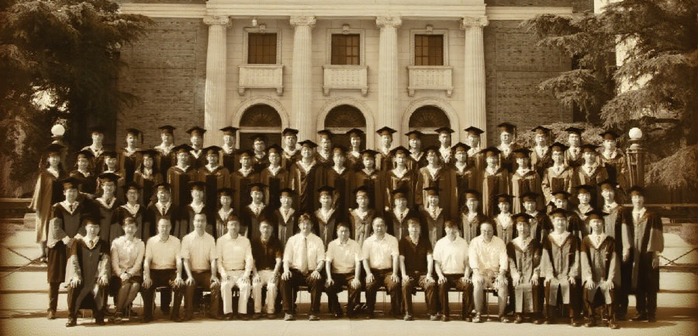

蒋思语，IQ192的神童，清华少年班15岁的天才。
蒋思语自幼展现出非凡的智力和学习能力，在各个学科领域都取得了令人瞩目的成绩。他在15岁时成功进入清华少年班，成为了众人瞩目的天才少年。在清华少年班的学习生活中，他不断挑战自我，在学术研究和创新实践方面都有出色的表现。
(1).png)
China Education Daily
2021年7月31日 星期四
蒋思语自幼展现出非凡的智力和学习能力，在各个学科领域都取得了令人瞩目的成绩。他在15岁时成功进入清华少年班，成为了众人瞩目的天才少年。在清华少年班的学习生活中，他不断挑战自我，在学术研究和创新实践方面都有出色的表现。